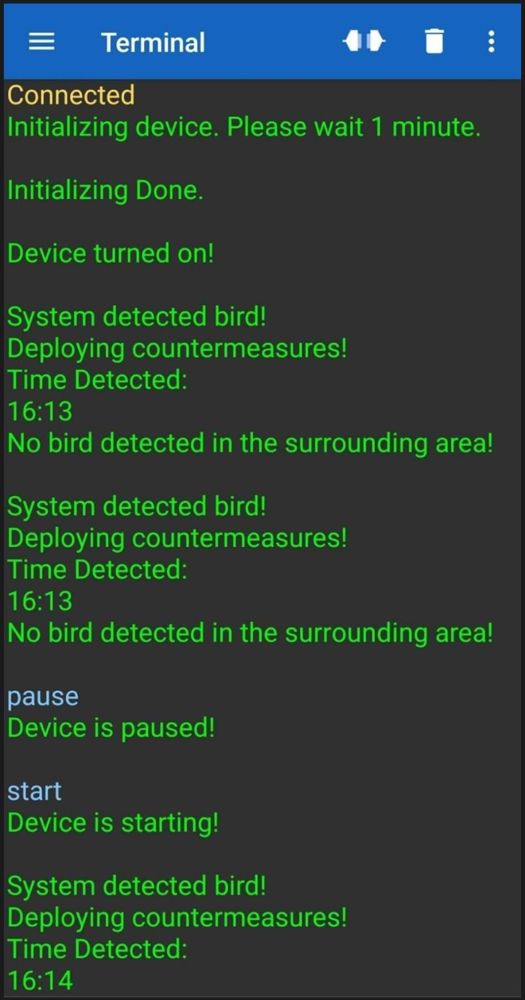
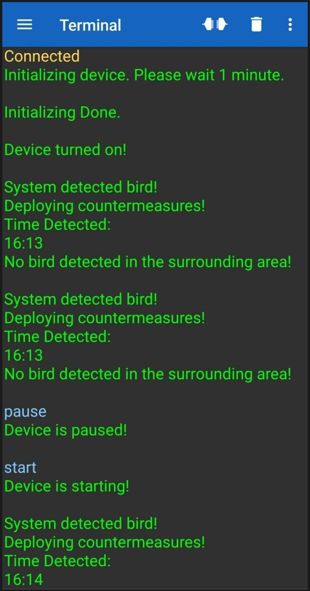

Bird Repelling Device with Human-like Movements and Audio Frequency for Agricultural Areas Using Motion Detection
An Arduino based device that repelled birds using auditory (speaker and MP3) and physical (servo motors) methods. Motion detection (PIR sensors) was the way of identifying nearby birds and a Bluetooth module alerted the connected phone for the device’s status. It was battery powered and recharged using solar panels.
 
